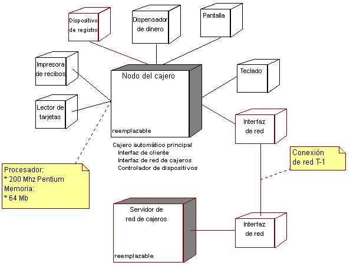

| Artefacto: Modelo de despliegue |
 |
|
|
| Descripción principal | El modelo de despliegue consta de uno o más nodos (elementos de proceso con, como mínimo, un procesador, memoria y posiblemente otros dispositivos), dispositivos (nodos estereotipados sin capacidad de proceso en el nivel modelado de abstracción) y conectores, entre nodos, y entre nodos y dispositivos. El modelo de despliegue también correlaciona procesos con los elementos de proceso, permitiendo la distribución de comportamiento entre los nodos que se deben representar. Los roles siguientes utilizan el modelo de despliegue:
|
|---|
| Ejemplos |
|---|
| Opciones de representación | Representación UML: Modelo. Un modelo de despliegue puede tener las siguientes propiedades:
El modelo de despliegue normalmente se representa en un diagrama como el que se muestra a continuación:  El modelo de despliegue es opcional para sistemas con un único procesador, o sistemas simples con poca o sin ningún tipo de distribución del procesamiento. Es obligatorio para los sistemas con configuraciones complejas de red o de procesador. |
|---|
© Copyright IBM Corp. 1987, 2006. Reservados todos los derechos. |